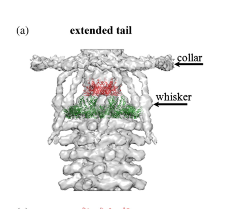

TODO: Add description for P10104
The research report should be a detailed narrative explaining the function, biological processes, and localization of the gene product. Citations should be given for all claims.
You should prioritize authoritative reviews and primary scientific literature when conducting research. You can supplement
this with annotations you find in gene/protein databases, but these can be outdated or inaccurate.
We are specifically interested in the primary function of the gene - for enzymes, what reaction is catalyzed, and what is the substrate specificity? For transporters, what is the substrate? For structural proteins or adapters, what is the broader structural role? For signaling molecules, what is the role in the pathway.
We are interested in where in or outside the cell the gene product carries out its function.
We are also interested in the signaling or biochemical pathways in which the gene functions. We are less interested in broad pleiotropic effects, except where these elucidate the precise role.
Include evidence where possible. We are interested in both experimental evidence as well as inference from structure, evolution, or bioinformatic analysis. Precise studies should be prioritized over high-throughput, where available.
The bacteriophage T4 gene wac (UniProt P10104) encodes fibritin (also called Wac or gpwac), a trimeric fibrous structural protein that decorates the virion neck as the collar and whiskers. Its primary biological role is to (i) promote efficient attachment/positioning of long tail fibers (LTFs) during late virion assembly and (ii) contribute to control of LTF retraction/availability, which modulates adsorption and infectivity under different environmental conditions. wac is nonessential but affects infectivity/fitness (e.g., small-plaque phenotype). (letarov2005gpwacofthe pages 1-2, fokine2013themoleculararchitecture pages 1-2, hu2015structuralremodelingof pages 1-3)
Verified identity. Multiple independent sources explicitly link T4 wac to fibritin and to the collar/whiskers structure at the phage neck. Efimov et al. describe “late gene wac” as encoding fibritin (named for “whisker’s antigen control”) and state that fibritin “builds the collar/whiskers complex on the phage neck.” (Jun 2005; https://doi.org/10.1007/bf01702598) (efimov2005bacteriophaget4as pages 1-3). Letarov et al. likewise identify the “wac gene product (gpwac) or fibritin of bacteriophage T4,” forming the fibers radiating from the neck and functioning in morphogenesis and infectivity control. (Feb 2005; https://doi.org/10.1128/jb.187.3.1055-1066.2005) (letarov2005gpwacofthe pages 1-2).
Key concept: collar/whiskers. The T4 neck (head–tail connector region) is “decorated” by a collar and whiskers made of fibritin molecules; cryo-EM fitting and genetic/structural interpretation place Wac/fibritin immediately below the head-tail junction. (May 2013; https://doi.org/10.1016/j.jmb.2013.02.012) (fokine2013themoleculararchitecture pages 1-2).
A central, repeatedly supported function is that Wac/fibritin helps ensure efficient incorporation and positioning of the six long tail fibers during late assembly.
Mechanistic interpretation. Structural descriptions indicate that fibritin interacts with LTF regions (e.g., the LTF “knee” region and/or distal domains) and that both termini of fibritin can attach to LTFs, consistent with a tethering/positioning function rather than an enzymatic role. (leiman2010morphogenesisofthe pages 21-22, letarov2005gpwacofthe pages 2-3).
Beyond assembly, Wac/fibritin is described as a control element for adsorption competence.
Genetic phenotype consistent with fitness impact. In situ infection-structural work reports that wac is nonessential, but wac mutants form small plaques, supporting the view that Wac improves infection efficiency/fitness rather than being absolutely required. (Aug 2015; https://doi.org/10.1073/pnas.1501064112) (hu2015structuralremodelingof pages 1-3).
Wac/fibritin forms the collar and whiskers at the neck (below the head–tail junction). (efimov2005bacteriophaget4as pages 1-3, fokine2013themoleculararchitecture pages 1-2, hu2015structuralremodelingof pages 1-3). Visual evidence from cryo-EM reconstructions and schematic models depicts the collar and whiskers surrounding the neck and labels the “wac” elements as the collar/whisker structures. (fokine2013themoleculararchitecture media 5e121c0c, fokine2013themoleculararchitecture media dee2b4cd).
Two related “copy number” quantities are used in the literature:
(These are not contradictory: each “fibritin molecule” in this context is a trimer.) (leiman2010morphogenesisofthe pages 21-22, fokine2013themoleculararchitecture pages 5-7).
Wac/fibritin is described as a segmented coiled-coil fiber with small globular ends.
Fokine et al. model fibritin by combining crystal structures of the N-terminal residues 1–80 and C-terminal residues 371–483 with a central coiled-coil model, and fit these into cryo-EM density; they report a deposited model (PDB 3J2O) and map (EMD-5528) and estimate a final cryo-EM reconstruction resolution of ~25 Å (FSC 0.5). (May 2013; https://doi.org/10.1016/j.jmb.2013.02.012) (fokine2013themoleculararchitecture pages 10-11).
Peer-reviewed 2023–2024 primary literature directly focused on T4 Wac/fibritin structure/function appears limited in the retrieved corpus; however, a notable 2024 preprint leverages fibritin as a spatial landmark in high-precision imaging.
T4 particles as 3D bio-nanorulers (2024). Gallea et al. propose bacteriophage T4 as a “nature-designed” 3D ruler for super-resolution microscopy and explicitly label fibritin using anti-fibritin antibodies in dual-color Exchange DNA-PAINT workflows, reporting whisker length and imaging accuracy metrics. While not primarily a mechanistic virology study, it represents a modern real-world deployment of the wac gene product as a defined structural feature for quantitative microscopy and method benchmarking. (Apr 2024; https://doi.org/10.1101/2024.04.04.588072) (gallea2024superresolutiongoingviral pages 7-10, gallea2024superresolutiongoingviral pages 10-14).
Fibritin’s outward-exposed C-terminus and tolerance for C-terminal extensions make it an engineering scaffold.
T4 fibritin has been used as a heterologous trimeric scaffold to retarget adenovirus vectors.
The foldon domain (a short C-terminal trimerization motif from fibritin) is widely repurposed in protein engineering and structural biology to enforce stable trimer formation.
Across genetic, biochemical, and structural literature, Wac/fibritin is best annotated as a neck-associated, trimeric coiled-coil structural accessory protein whose mechanistic contributions are (i) tail fiber handling during assembly and (ii) regulation of tail fiber presentation (retraction/availability) that impacts adsorption competence. The repeated emphasis on binding/positioning of long tail fibers and environmental control of fiber retraction supports a functional annotation centered on virion morphogenesis and infectivity modulation, rather than catalysis or transport. (letarov2005gpwacofthe pages 1-2, fokine2013themoleculararchitecture pages 5-7, hu2015structuralremodelingof pages 1-3).
| Topic | Key claim/data | Evidence type | Source (first author, year, journal) | Publication date/month | URL/DOI |
|---|---|---|---|---|---|
| Identity | In bacteriophage T4, late gene wac encodes fibritin (also called gpwac/Wac); the name is linked to “whisker antigen control” and the protein builds the collar/whiskers complex on the phage neck. (letarov2005gpwacofthe pages 1-2, efimov2005bacteriophaget4as pages 1-3, hu2015structuralremodelingof pages 1-3) | Genetic, structural, review | Letarov 2005, Journal of Bacteriology; Efimov 2005, Virus Genes; Hu 2015, PNAS | Feb 2005; Jun 2005; Aug 2015 | https://doi.org/10.1128/jb.187.3.1055-1066.2005 ; https://doi.org/10.1007/bf01702598 ; https://doi.org/10.1073/pnas.1501064112 |
| Localization | Fibritin/Wac localizes to the virion neck, forming the collar and whiskers just below the head-tail junction. (letarov2005gpwacofthe pages 1-2, fokine2013themoleculararchitecture pages 1-2, hu2015structuralremodelingof pages 1-3) | Cryo-EM, structural analysis | Letarov 2005, Journal of Bacteriology; Fokine 2013, Journal of Molecular Biology; Hu 2015, PNAS | Feb 2005; May 2013; Aug 2015 | https://doi.org/10.1128/jb.187.3.1055-1066.2005 ; https://doi.org/10.1016/j.jmb.2013.02.012 ; https://doi.org/10.1073/pnas.1501064112 |
| Copy number | Cryo-EM and structural interpretation indicate 12 Wac/fibritin molecules per virion, arranged as 6 forming the collar and 6 forming the whiskers. (fokine2013themoleculararchitecture pages 5-7, fokine2013themoleculararchitecture pages 1-2, hu2015structuralremodelingof pages 1-3) | Cryo-EM, structural modeling | Fokine 2013, Journal of Molecular Biology; Hu 2015, PNAS | May 2013; Aug 2015 | https://doi.org/10.1016/j.jmb.2013.02.012 ; https://doi.org/10.1073/pnas.1501064112 |
| Oligomeric state | Individual fibritin molecules are trimers; the protein is a trimeric elongated fiber and can be SDS-resistant in oligomeric form. (leiman2010morphogenesisofthe pages 21-22, letarov2005gpwacofthe pages 5-6, letarov2005gpwacofthe pages 6-7) | Biochemical, structural | Leiman 2010, Virology Journal; Letarov 2005, Journal of Bacteriology | Dec 2010; Feb 2005 | https://doi.org/10.1186/1743-422x-7-355 ; https://doi.org/10.1128/jb.187.3.1055-1066.2005 |
| Structure/domains | T4 fibritin is a ~486–487 aa segmented fibrous protein with a conserved N-terminal neck-binding domain (~50 aa / residues 1–80 modeled), a long central coiled-coil shaft, and a C-terminal foldon (~30 aa) that initiates trimerization and correct folding. (letarov2005gpwacofthe pages 1-2, fokine2013themoleculararchitecture pages 10-11, letarov2005gpwacofthe pages 3-5, letarov2005gpwacofthe pages 5-6, efimov2005bacteriophaget4as pages 1-3) | X-ray/cryo-EM modeling, biochemical | Letarov 2005, Journal of Bacteriology; Fokine 2013, Journal of Molecular Biology; Efimov 2005, Virus Genes | Feb 2005; May 2013; Jun 2005 | https://doi.org/10.1128/jb.187.3.1055-1066.2005 ; https://doi.org/10.1016/j.jmb.2013.02.012 ; https://doi.org/10.1007/bf01702598 |
| Quantitative dimensions | Reported dimensions include fibritin length of ~480 Å or ~530 Å / 53 nm, diameter ~20 Å, and a neck collar of ~300 Å diameter and ~40 Å thickness. (letarov2005gpwacofthe pages 1-2, leiman2010morphogenesisofthe pages 21-22, gallea2024superresolutiongoingviral pages 7-10) | Cryo-EM, structural review, super-resolution implementation | Letarov 2005, Journal of Bacteriology; Leiman 2010, Virology Journal; Gallea 2024, bioRxiv | Feb 2005; Dec 2010; Apr 2024 | https://doi.org/10.1128/jb.187.3.1055-1066.2005 ; https://doi.org/10.1186/1743-422x-7-355 ; https://doi.org/10.1101/2024.04.04.588072 |
| Assembly role | During morphogenesis, fibritin/Wac acts as a chaperone/scaffold for long tail fiber (LTF) attachment, helping position assembled LTFs for joining to the baseplate; without fibritin, LTF attachment is very slow. (letarov2005gpwacofthe pages 1-2, leiman2010morphogenesisofthe pages 21-22, fokine2013themoleculararchitecture pages 1-2) | Genetic, structural, morphogenesis studies | Letarov 2005, Journal of Bacteriology; Leiman 2010, Virology Journal; Fokine 2013, Journal of Molecular Biology | Feb 2005; Dec 2010; May 2013 | https://doi.org/10.1128/jb.187.3.1055-1066.2005 ; https://doi.org/10.1186/1743-422x-7-355 ; https://doi.org/10.1016/j.jmb.2013.02.012 |
| Infectivity role | Post-lysis, Wac/fibritin acts as an environmental sensor that helps keep long tail fibers retracted under unfavorable conditions, thereby modulating adsorption and infectivity. (letarov2005gpwacofthe pages 1-2, fokine2013themoleculararchitecture pages 5-7) | Genetic, functional interpretation | Letarov 2005, Journal of Bacteriology; Fokine 2013, Journal of Molecular Biology | Feb 2005; May 2013 | https://doi.org/10.1128/jb.187.3.1055-1066.2005 ; https://doi.org/10.1016/j.jmb.2013.02.012 |
| Mutant phenotype | wac is nonessential for T4 viability, but wac mutants form small plaques and display defective/short-stub long tail fiber presentation in structural analyses. (hu2015structuralremodelingof pages 1-3) | Genetic, cryo-EM | Hu 2015, PNAS | Aug 2015 | https://doi.org/10.1073/pnas.1501064112 |
| Cryo-EM / structural resources | Fokine et al. fitted fibritin models built from N-terminal residues 1–80 and C-terminal residues 371–483 plus modeled coiled-coil into T4 neck density; reported resources include PDB 3J2O and EMD-5528, with final cryo-EM reconstruction at ~25 Å. (fokine2013themoleculararchitecture pages 10-11) | Cryo-EM, model fitting | Fokine 2013, Journal of Molecular Biology | May 2013 | https://doi.org/10.1016/j.jmb.2013.02.012 |
| Application: T4 display | The outward-exposed C terminus of fibritin can be lengthened/fused to foreign peptides without abolishing folding or neck binding; engineered T4 particles displayed a 53-residue insert including 45 aa from HBV pre-S2. (efimov2005bacteriophaget4as pages 1-3, gamkrelidze2014t4bacteriophageas pages 2-4) | Engineering, phage display | Efimov 2005, Virus Genes; Gamkrelidze 2014, Archives of Microbiology | Jun 2005; May 2014 | https://doi.org/10.1007/bf01702598 ; https://doi.org/10.1007/s00203-014-0989-8 |
| Application: super-resolution bionanoruler | A 2024 preprint used anti-fibritin/Wac labeling in Exchange 3D DNA-PAINT to image T4 as a 3D bio-nanoruler, resolving the expected fibrous collar morphology and reporting six 53 nm whiskers; instrumentation metrics included ~3 nm FRC effective resolution and ~7 nm linkage error. (gallea2024superresolutiongoingviral pages 7-10, gallea2024superresolutiongoingviral pages 10-14, gallea2024superresolutiongoingviral pages 14-16) | Super-resolution imaging, engineering | Gallea 2024, bioRxiv | Apr 2024 | https://doi.org/10.1101/2024.04.04.588072 |
| Application: adenovirus targeting | T4 fibritin was used to engineer adenovirus vectors by replacing the native fiber with a fiber-fibritin chimera, enabling receptor-specific gene delivery. (krasnykh2001genetictargetingof pages 1-2) | Viral engineering, gene delivery | Krasnykh 2001, Journal of Virology | May 2001 | https://doi.org/10.1128/jvi.75.9.4176-4183.2001 |
| Application: foldon as trimerization tag | The fibritin foldon is an autonomously folding trimerization domain that has been widely repurposed as a trimerization/registration tag for chimeric fibrous proteins, producing highly stable SDS-resistant trimers and aiding structural biology and nanostructure engineering. (papanikolopoulou2008creationofhybrid pages 13-16, papanikolopoulou2004adenovirusfibreshaft pages 8-9, papanikolopoulou2004formationofhighly pages 1-1, boudko2002domainorganizationfolding pages 8-9) | Protein engineering, structural biology | Papanikolopoulou 2004, J Mol Biol; Papanikolopoulou 2004, JBC; Papanikolopoulou 2008, Methods Mol Biol; Boudko 2002, Eur J Biochem | Sep 2004; Mar 2004; Jan 2008; Feb 2002 | https://doi.org/10.1016/j.jmb.2004.07.008 ; https://doi.org/10.1074/jbc.m311791200 ; https://doi.org/10.1007/978-1-59745-480-3_2 ; https://doi.org/10.1046/j.1432-1033.2002.02734.x |
Table: This table summarizes the core functional annotation, structural biology, and applied engineering evidence for bacteriophage T4 gene wac/fibritin. It highlights identity verification, virion localization, quantitative structural parameters, and validated applications supported by the gathered sources.
References
(letarov2005gpwacofthe pages 1-2): A. Letarov, X. Manival, C. Desplats, and H. M. Krisch. Gpwac of the t4-type bacteriophages: structure, function, and evolution of a segmented coiled-coil protein that controls viral infectivity. Journal of Bacteriology, 187:1055-1066, Feb 2005. URL: https://doi.org/10.1128/jb.187.3.1055-1066.2005, doi:10.1128/jb.187.3.1055-1066.2005. This article has 39 citations and is from a peer-reviewed journal.
(fokine2013themoleculararchitecture pages 1-2): Andrei Fokine, Zhihong Zhang, Shuji Kanamaru, Valorie D. Bowman, Anastasia A. Aksyuk, Fumio Arisaka, Venigalla B. Rao, and Michael G. Rossmann. The molecular architecture of the bacteriophage t4 neck. Journal of molecular biology, 425 10:1731-44, May 2013. URL: https://doi.org/10.1016/j.jmb.2013.02.012, doi:10.1016/j.jmb.2013.02.012. This article has 101 citations and is from a domain leading peer-reviewed journal.
(hu2015structuralremodelingof pages 1-3): Bo Hu, William Margolin, Ian J. Molineux, and Jun Liu. Structural remodeling of bacteriophage t4 and host membranes during infection initiation. Proceedings of the National Academy of Sciences, 112:E4919-E4928, Aug 2015. URL: https://doi.org/10.1073/pnas.1501064112, doi:10.1073/pnas.1501064112. This article has 317 citations and is from a highest quality peer-reviewed journal.
(efimov2005bacteriophaget4as pages 1-3): Vladimir P. Efimov, Igor V. Nepluev, and Vadim V. Mesyanzhinov. Bacteriophage t4 as a surface display vector. Virus Genes, 10:173-177, Jun 2005. URL: https://doi.org/10.1007/bf01702598, doi:10.1007/bf01702598. This article has 131 citations and is from a peer-reviewed journal.
(leiman2010morphogenesisofthe pages 21-22): Petr G Leiman, Fumio Arisaka, Mark J van Raaij, Victor A Kostyuchenko, Anastasia A Aksyuk, Shuji Kanamaru, and Michael G Rossmann. Morphogenesis of the t4 tail and tail fibers. Virology Journal, 7:355-355, Dec 2010. URL: https://doi.org/10.1186/1743-422x-7-355, doi:10.1186/1743-422x-7-355. This article has 319 citations and is from a peer-reviewed journal.
(letarov2005gpwacofthe pages 2-3): A. Letarov, X. Manival, C. Desplats, and H. M. Krisch. Gpwac of the t4-type bacteriophages: structure, function, and evolution of a segmented coiled-coil protein that controls viral infectivity. Journal of Bacteriology, 187:1055-1066, Feb 2005. URL: https://doi.org/10.1128/jb.187.3.1055-1066.2005, doi:10.1128/jb.187.3.1055-1066.2005. This article has 39 citations and is from a peer-reviewed journal.
(fokine2013themoleculararchitecture pages 5-7): Andrei Fokine, Zhihong Zhang, Shuji Kanamaru, Valorie D. Bowman, Anastasia A. Aksyuk, Fumio Arisaka, Venigalla B. Rao, and Michael G. Rossmann. The molecular architecture of the bacteriophage t4 neck. Journal of molecular biology, 425 10:1731-44, May 2013. URL: https://doi.org/10.1016/j.jmb.2013.02.012, doi:10.1016/j.jmb.2013.02.012. This article has 101 citations and is from a domain leading peer-reviewed journal.
(fokine2013themoleculararchitecture media 5e121c0c): Andrei Fokine, Zhihong Zhang, Shuji Kanamaru, Valorie D. Bowman, Anastasia A. Aksyuk, Fumio Arisaka, Venigalla B. Rao, and Michael G. Rossmann. The molecular architecture of the bacteriophage t4 neck. Journal of molecular biology, 425 10:1731-44, May 2013. URL: https://doi.org/10.1016/j.jmb.2013.02.012, doi:10.1016/j.jmb.2013.02.012. This article has 101 citations and is from a domain leading peer-reviewed journal.
(fokine2013themoleculararchitecture media dee2b4cd): Andrei Fokine, Zhihong Zhang, Shuji Kanamaru, Valorie D. Bowman, Anastasia A. Aksyuk, Fumio Arisaka, Venigalla B. Rao, and Michael G. Rossmann. The molecular architecture of the bacteriophage t4 neck. Journal of molecular biology, 425 10:1731-44, May 2013. URL: https://doi.org/10.1016/j.jmb.2013.02.012, doi:10.1016/j.jmb.2013.02.012. This article has 101 citations and is from a domain leading peer-reviewed journal.
(letarov2005gpwacofthe pages 5-6): A. Letarov, X. Manival, C. Desplats, and H. M. Krisch. Gpwac of the t4-type bacteriophages: structure, function, and evolution of a segmented coiled-coil protein that controls viral infectivity. Journal of Bacteriology, 187:1055-1066, Feb 2005. URL: https://doi.org/10.1128/jb.187.3.1055-1066.2005, doi:10.1128/jb.187.3.1055-1066.2005. This article has 39 citations and is from a peer-reviewed journal.
(letarov2005gpwacofthe pages 6-7): A. Letarov, X. Manival, C. Desplats, and H. M. Krisch. Gpwac of the t4-type bacteriophages: structure, function, and evolution of a segmented coiled-coil protein that controls viral infectivity. Journal of Bacteriology, 187:1055-1066, Feb 2005. URL: https://doi.org/10.1128/jb.187.3.1055-1066.2005, doi:10.1128/jb.187.3.1055-1066.2005. This article has 39 citations and is from a peer-reviewed journal.
(fokine2013themoleculararchitecture pages 10-11): Andrei Fokine, Zhihong Zhang, Shuji Kanamaru, Valorie D. Bowman, Anastasia A. Aksyuk, Fumio Arisaka, Venigalla B. Rao, and Michael G. Rossmann. The molecular architecture of the bacteriophage t4 neck. Journal of molecular biology, 425 10:1731-44, May 2013. URL: https://doi.org/10.1016/j.jmb.2013.02.012, doi:10.1016/j.jmb.2013.02.012. This article has 101 citations and is from a domain leading peer-reviewed journal.
(gallea2024superresolutiongoingviral pages 7-10): José Ignacio Gallea, Oleksii Nevskyi, Zuzanna Kaźmierczak, Tao Chen, Paulina Miernikiewicz, Anna Chizhik, Krystyna Dąbrowska, Mark Bates, and Jörg Enderlein. Super-resolution going viral: t4 virus particles as perfect nature-designed 3d-bio-nanorulers. bioRxiv, Apr 2024. URL: https://doi.org/10.1101/2024.04.04.588072, doi:10.1101/2024.04.04.588072. This article has 0 citations.
(gallea2024superresolutiongoingviral pages 10-14): José Ignacio Gallea, Oleksii Nevskyi, Zuzanna Kaźmierczak, Tao Chen, Paulina Miernikiewicz, Anna Chizhik, Krystyna Dąbrowska, Mark Bates, and Jörg Enderlein. Super-resolution going viral: t4 virus particles as perfect nature-designed 3d-bio-nanorulers. bioRxiv, Apr 2024. URL: https://doi.org/10.1101/2024.04.04.588072, doi:10.1101/2024.04.04.588072. This article has 0 citations.
(gamkrelidze2014t4bacteriophageas pages 2-4): Mariam Gamkrelidze and Krystyna Dąbrowska. T4 bacteriophage as a phage display platform. Archives of Microbiology, 196:473-479, May 2014. URL: https://doi.org/10.1007/s00203-014-0989-8, doi:10.1007/s00203-014-0989-8. This article has 77 citations and is from a peer-reviewed journal.
(krasnykh2001genetictargetingof pages 1-2): Victor Krasnykh, Natalya Belousova, Nikolay Korokhov, Galina Mikheeva, and David T. Curiel. Genetic targeting of an adenovirus vector via replacement of the fiber protein with the phage t4 fibritin. Journal of Virology, 75:4176-4183, May 2001. URL: https://doi.org/10.1128/jvi.75.9.4176-4183.2001, doi:10.1128/jvi.75.9.4176-4183.2001. This article has 243 citations and is from a domain leading peer-reviewed journal.
(papanikolopoulou2004formationofhighly pages 1-1): Katerina Papanikolopoulou, Vincent Forge, Pierrette Goeltz, and Anna Mitraki. Formation of highly stable chimeric trimers by fusion of an adenovirus fiber shaft fragment with the foldon domain of bacteriophage t4 fibritin*. Journal of Biological Chemistry, 279:8991-8998, Mar 2004. URL: https://doi.org/10.1074/jbc.m311791200, doi:10.1074/jbc.m311791200. This article has 91 citations and is from a domain leading peer-reviewed journal.
(papanikolopoulou2004adenovirusfibreshaft pages 8-9): Katerina Papanikolopoulou, Susana Teixeira, Hassan Belrhali, V. Trevor Forsyth, Anna Mitraki, and Mark J. van Raaij. Adenovirus fibre shaft sequences fold into the native triple beta-spiral fold when n-terminally fused to the bacteriophage t4 fibritin foldon trimerisation motif. Journal of molecular biology, 342 1:219-27, Sep 2004. URL: https://doi.org/10.1016/j.jmb.2004.07.008, doi:10.1016/j.jmb.2004.07.008. This article has 52 citations and is from a domain leading peer-reviewed journal.
(papanikolopoulou2008creationofhybrid pages 13-16): Katerina Papanikolopoulou, Mark J. Raaij, and Anna Mitraki. Creation of hybrid nanorods from sequences of natural trimeric fibrous proteins using the fibritin trimerization motif. Methods in molecular biology, 474:15-33, Jan 2008. URL: https://doi.org/10.1007/978-1-59745-480-3_2, doi:10.1007/978-1-59745-480-3_2. This article has 12 citations and is from a peer-reviewed journal.
(letarov2005gpwacofthe pages 3-5): A. Letarov, X. Manival, C. Desplats, and H. M. Krisch. Gpwac of the t4-type bacteriophages: structure, function, and evolution of a segmented coiled-coil protein that controls viral infectivity. Journal of Bacteriology, 187:1055-1066, Feb 2005. URL: https://doi.org/10.1128/jb.187.3.1055-1066.2005, doi:10.1128/jb.187.3.1055-1066.2005. This article has 39 citations and is from a peer-reviewed journal.
(gallea2024superresolutiongoingviral pages 14-16): José Ignacio Gallea, Oleksii Nevskyi, Zuzanna Kaźmierczak, Tao Chen, Paulina Miernikiewicz, Anna Chizhik, Krystyna Dąbrowska, Mark Bates, and Jörg Enderlein. Super-resolution going viral: t4 virus particles as perfect nature-designed 3d-bio-nanorulers. bioRxiv, Apr 2024. URL: https://doi.org/10.1101/2024.04.04.588072, doi:10.1101/2024.04.04.588072. This article has 0 citations.
(boudko2002domainorganizationfolding pages 8-9): Sergei P. Boudko, Yuri Y. Londer, Andrei V. Letarov, Natalia V. Sernova, Juergen Engel, and Vadim V. Mesyanzhinov. Domain organization, folding and stability of bacteriophage t4 fibritin, a segmented coiled-coil protein. European journal of biochemistry, 269 3:833-41, Feb 2002. URL: https://doi.org/10.1046/j.1432-1033.2002.02734.x, doi:10.1046/j.1432-1033.2002.02734.x. This article has 58 citations.

id: P10104
gene_symbol: P10104
product_type: PROTEIN
status: INITIALIZED
taxon:
id: NCBITaxon:10665
label: Enterobacteria phage T4
description: 'TODO: Add description for P10104'
existing_annotations: []
{kind=link}